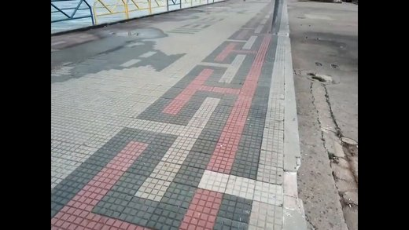

00:00:26.400
Detalhe do calçadão da orla, com faixas geométricas em tons de vermelho e cinza no piso e guarda-corpo colorido junto à água.
Orla de Santarém, Santarém (PA) · confirmado
A câmera se ergue do piso em direção ao rio na primeira live do canal em Santarém. A faixa de áudio é silenciosa.
Transcrição · 00:00:00
Turismo Aqui — quadro de vídeo publicado no YouTube